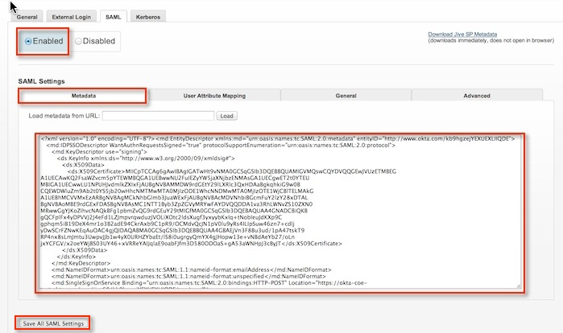
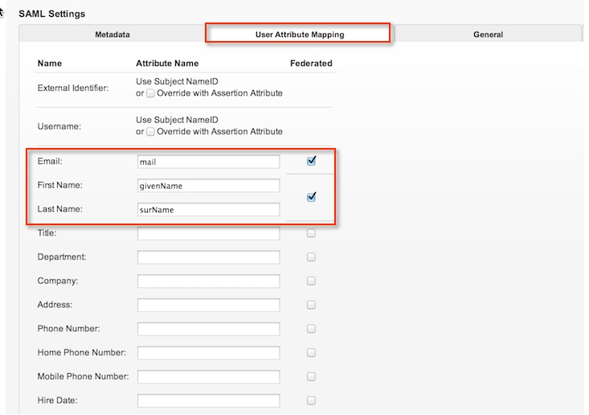

Send an email to Jive support to request SAML 2.0 access. Attach the following metadata to the message.
Sign in to Okta Admin app to have this variable generated for you.
Wait for a reply. After you receive confirmation, continue with the following steps to complete the customization.
Log in to the Jive 6.0 Administration Console with your username and password.
On the SAML tab, select Metadata. Then, check Enabled and paste the IDP metadata shown in step 1.
Select User Attribute Mapping tab and ensure the values match those shown below.

Done!